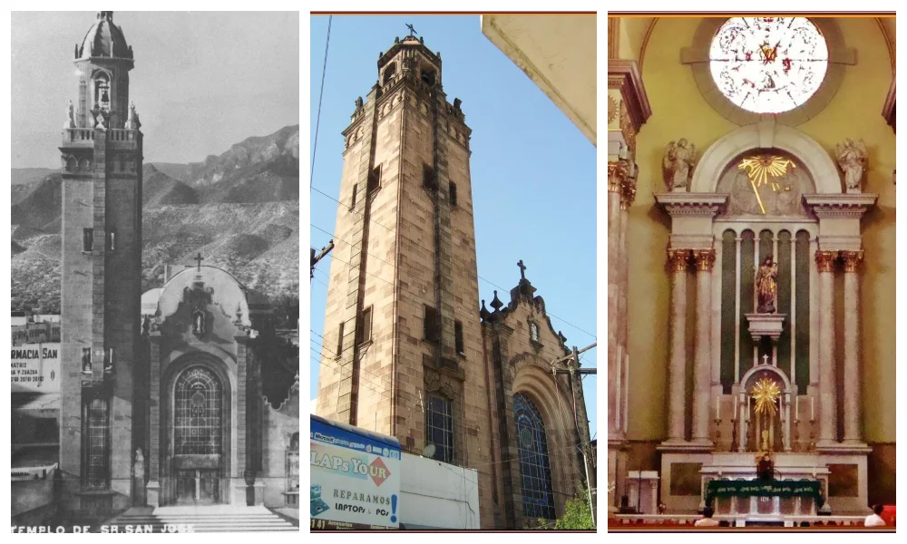
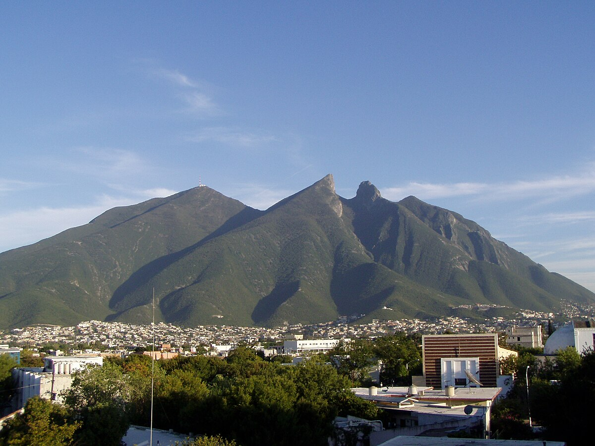

La Sultana del Norte
Monterrey es la capital del estado de Nuevo León, ubicada en la región metropolitana. Con una población aproximada de 1.1 millones de habitantes, presenta un clima semiárido con veranos extremadamente calurosos e inviernos frescos. Es considerada el centro económico más importante del norte del país, destacando los sectores industriales, comerciales y de servicios.
Construcción de Identidad
Herencia Indígena

El territorio de Monterrey estaba habitado originalmente por los pueblos guachichiles hasta la llegada de los españoles en el siglo XVI. Posteriormente se enriqueció con inmigrantes europeos (alemanes y franceses) en el siglo XIX, creando un singular mestizaje cultural.
Cultura Juvenil

Los jóvenes regiomontanos han desarrollado una cultura vibrante con espacios como el Barrio Antiguo, donde se encuentran discotecas y locales que ofrecen tanto comida como diversos tipos de música. San Pedro ofrece actividades como senderismo y vida nocturna, mientras eventos como el Tecate Pal'Norte atraen a miles de personas, fortaleciendo la industria de música independiente.
Diversidad Sexual

Monterrey alberga una de las comunidades LGBT+ más grandes del norte de México. Cada año se celebra una marcha del orgullo que gana más participantes y visibilidad, reflejando la apertura y diversidad de la ciudad.
Manifestaciones Culturales Destacadas
Expresiones Musicales

El emblemático sonido norteño, con sus acordeones y bajos sextos, convive con innovadoras fusiones como la "cumbia rebajada" de Celso Piña y el hip-hop urbano de Control Machete. Festivales como el Pal'Norte muestran cómo nuevas generaciones mezclan marimba con punk o electrónica con corridos, demostrando que el "sonido regio" sigue evolucionando sin perder su esencia rebelde y fronteriza.
Festividades Religiosas

La devoción a San Judas Tadeo transforma cada 28 de octubre el entorno del Templo de San José en un mar de fieles portando velas y estampas. Esta celebración mezcla fe popular y tradición urbana, con puestos callejeros vendiendo tamales y algodones de azúcar junto a los reclinatorios.
Patrimonio Arquitectónico

Monterrey ofrece un diálogo fascinante entre épocas: el Barrio Antiguo conserva casonas de cantera gris que sobrevivieron al crecimiento industrial, mientras el MARCO y la Biblioteca Central de la UANL representan la audacia contemporánea con sus líneas depuradas. Esta dualidad refleja la esencia de una ciudad que honra su pasado mientras abraza la modernidad.
Gastronomía Emblemática

El machacado con huevo, solución ingeniosa al clima desértico, encapsula la inventiva norteña. Su preparación -carne seca rehidratada con huevo, acompañada de tortillas de harina recién hechas- es ritual matutino en fondas y hogares. Este platillo resume la adaptación cultural: técnicas indígenas de deshidratación con ingredientes europeos.
Turismo Cultural
Parque Fundidora

Testigo silencioso del pasado industrial de Monterrey, ha renacido como espacio cultural donde conviven historia y modernidad. Sus antiguas naves siderúrgicas albergan ahora museos como el Horno 3, que revive el proceso metalúrgico con tecnología interactiva, mientras el Paseo Santa Lucía serpentea entre jardines y esculturas contemporáneas. Por las noches, sus estructuras se transforman en impresionantes instalaciones luminosas.
Cerro de la Silla

Se erige como guardián natural de Monterrey. Sus senderos, antiguas rutas de arrieros, ofrecen panorámicas espectaculares y un viaje por la historia local. Los domingos al amanecer, aún se escuchan las guitarras de quienes mantienen la tradición de cantarle a la ciudad desde sus faldas. Representa la permanencia y conexión con el paisaje natural.